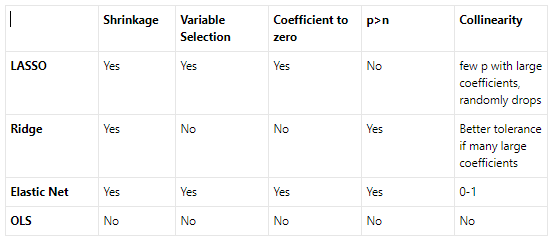

7 Summary
7.1 Human Freedom Index (High Dimensional Data Example)
The Human Freedom Index uses parameters to determine the personal and economic freedoms of a particular country or jurisdiction. The data used to create the model was trimmed to include the parameters that contained greater than 50% of responses then the countries and jurisdictions with complete observations was utilized. The response variable for the model is the political freedom homicide model. The remaining distinct variables will be used as predictors.
First a linear model was attempted. This model returned an error regarding the degrees of freedom due to the number of predictors in the set. The natural response is the need for a reduction in the number of predictors. The best way to manage a reduction of parameters is the use of regularization models.
The three basic regularization models are ridge regression, elastic net, and LASSO. The data was then used to compute the LASSO \(\lambda\) and the ridge regression \(\lambda\). The elastic net uses both \(\lambda\)’s as it is a blend of the two models.
Ridge regression reduces the parameters coefficients but does not eliminate any parameters, LASSO eliminates the most parameters, and the elastic net is a blend of the two. The blending of the elastic net can be determined by the selection of \(\alpha\). Where an \(\alpha\) closer to 0 is more like the ridge regression which retains more parameters and an \(\alpha\) closer to 1 is closer to LASSO which retains less parameters.
We created 5 models.
| Regularization Model Type | Number of Coefficients |
|---|---|
| Ridge Regression | 98 |
| Elastic net \(\alpha=0.25\) | 41 |
| Elastic net \(\alpha=0.50\) | 27 |
| Elastic net \(\alpha=0.75\) | 13 |
| LASSO | 10 |
The data was broken down into an 80/20 split to allow for the creation and testing of the models. The R2 of the models were computed to determine the best model.
| Regularization Model Type | \(R^2\) |
|---|---|
| Ridge Regression | .283 |
| Elastic net \(\alpha=0.25\) | .855 |
| Elastic net \(\alpha=0.50\) | .975 |
| Elastic net \(\alpha=0.75\) | .994 |
| LASSO | .998 |
The pure LASSO model was determined to be the best fit. This model needs a little more testing to ensure the model is not overfit to the particular data. This may be an issue due to the low number of observations (\(n=93\)). This model did reduce the number of parameters methodically which can allow us to revisit the linear model.
7.2 Jackson Heart Study
Both LASSO and Ridge shrink coefficients towards a constraint region, LASSO’s constraint is towards the absolute value of the slope while Ridge’s constraint is towards the squared slope. In order to minimize the Residual Sum of Squares, we want the modified coefficient closest to that of the OLS Beta. For LASSO, this can be on the axis, essentially zeroing out a coefficient in the model. This makes LASSO good for feature selection by helping to cull out the model. Here you can see increasing Lambda values shrink the number of coefficients for LASSO and Elastic Net ( hybrid of LASSO and Ridge). All models started with 28 variables. Ordinary least squares model is included for comparison (with no penalty term).
| Regularization Model Type | Number of Coefficients |
|---|---|
| LASSO (linear model), lambda=0.002 | 27 |
| LASSO (linear model) optimal lambda=0.004 | 27 |
| LASSO (linear model) lambda=0.2 | 20 |
| LASSO (linear model) lambda=2.0 | 2 |
| LASSO (gamma penalty) | 25 |
| Ridge ( at all lambda values) | 28 |
| Elastic Net at optimal lambda | 26 |
| Ordinary Least Squares | 28 |
The example of Collinearity in JHS data saw few features with large coefficients, indicating LASSO was predicted to outperform the others. In fact, model performance was overall very similar among the four models tested with LASSO Regression coming out slightly ahead in this instance (lowest RMSE, highest R2 values).
| RMSE | R-squared | |
|---|---|---|
| LASSO | 6.305145 | 0.3074768 |
| Ridge | 6.313302 | 0.3056838 |
| ElasticNet | 6.30564 | 0.3073681 |
| OLS | 6.305874 | 0.3073168 |

In summary, Lasso, Ridge, and Elastic Net Regression are regularization modifications of the General Linear Model. They add bias to the model to compensate for overfitting. Multiplying coefficients using a penalty term shrinks the coefficients to add bias and can provide tolerance to multicollinearity. In Lasso's case, coefficients can go to all the way to zero, so LASSO can be used in feature selection as well. All three techniques have their limitations and can be sensitive to the ratio of the sample size to the feature size.
Future studies include using Group LASSO with these datasets to get a better model for multicollinearity data, especially for the features that are redundant or can be grouped. Additionally, Adaptive LASSO is another technique that runs Ridge first then LASSO to improve performance, and Least Angle Regression (LARS) LASSO and Forward Stagewise are alternative methods for choosing Lambda.